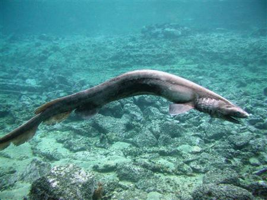

Płaszczak
Nazwa:
Płaszczak, chlamida – gatunek prymitywnego rekina z rodziny płaszczakowatych blisko spokrewniony z wymarłymi gatunkami znanymi w zapisie kopalnym z pokładów plioceńskich Antyli i mioceńskich Europy.

Cechy ogólne:

Ciało silnie wydłużone, węgorzowate, o długości 100–150 cm (maksymalnie 200 cm), z jedną płetwą grzbietową, otwór gębowy w położeniu końcowym, sześć par szczelin skrzelowych. Ubarwienie ciemnobrązowe lub szare. Samice są większe od samców. Podłużne wężowate ciało ryba wykorzystuje do wykonywania „skoków” na ofiarę, podobnie jak robią to węże. Do tego wyposażony jest w 300 siekaczy, każdy z 5 małymi wypustami podobnymi do igieł. Gatunek jajożyworodny. Samica rodzi 3–12 młodych.
Płaszczaki żywią się kałamarnicami i rybami. Ich mięso jest jadalne, ale jako gatunek występujący nielicznie i prowadzący głębinowy tryb życia nie ma znaczenia gospodarczego
Źródło: